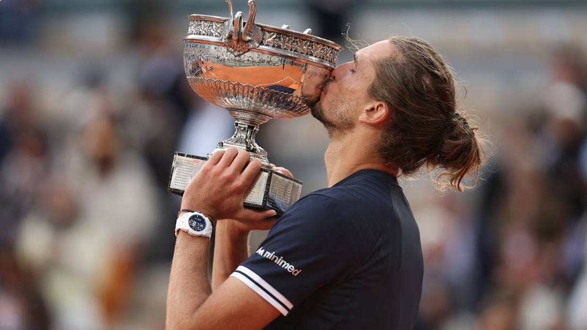

Zverev lần đầu vô địch Grand Slam sau chiến thắng tại Roland Garros 2026
Tay vợt người Đức Alexander Zverev đã giành danh hiệu Grand Slam đầu tiên trong sự nghiệp sau khi đánh bại Flavio Cobolli trong trận chung kết Roland Garros 2026 kéo dài 5 set đầy kịch tính diễn ra ngày 7/6 trên sân Philippe - Chatrier.

Ở tuổi 29, Zverev vượt qua đối thủ người Ý với tỷ số 6-1, 4-6, 6-4, 6-7 (5-7), 6-1 sau hơn ba giờ thi đấu để lần đầu tiên nâng cao cúp vô địch một giải Grand Slam. Chiến thắng này cũng giúp anh chấm dứt chuỗi ba lần thất bại ở các trận chung kết Grand Slam trước đó.
Bước vào trận đấu với tư cách tay vợt số 3 thế giới và được đánh giá cao hơn, Zverev khởi đầu thuận lợi khi dễ dàng giành chiến thắng 6-1 ở set đầu tiên. Tuy nhiên, Cobolli đã cho thấy sự lì lợm khi giành set hai với tỷ số 6-4 để đưa trận đấu trở lại thế cân bằng.
Hai tay vợt tiếp tục tạo nên màn rượt đuổi hấp dẫn trong những set tiếp theo. Zverev thắng set ba 6-4 trước khi Cobolli kéo trận đấu vào set quyết định bằng chiến thắng 7-6 trong loạt tie-break của set bốn.
Dù vậy, sau hơn ba giờ thi đấu căng thẳng, thể lực của tay vợt người Ý bắt đầu suy giảm. Tận dụng lợi thế về kinh nghiệm, Zverev nhanh chóng kiểm soát thế trận ở set năm và khép lại trận đấu bằng chiến thắng 6-1 để đăng quang tại Paris.
Danh hiệu vô địch Roland Garros 2026 mang ý nghĩa đặc biệt đối với Zverev. Trước đó, anh từng thất bại trong cả ba lần góp mặt ở các trận chung kết Grand Slam, gồm US Open 2020 trước Dominic Thiem, Roland Garros 2024 trước Carlos Alcaraz và Australian Open 2025 trước Jannik Sinner.
Đây cũng là nơi Zverev từng gặp chấn thương mắt cá chân nghiêm trọng vào năm 2022 khi thi đấu tại bán kết Roland Garros. Vì vậy, chức vô địch lần này được xem là cột mốc đáng nhớ trong sự nghiệp của tay vợt người Đức.
Phát biểu sau trận đấu, Zverev bày tỏ sự xúc động: “Tôi đã có những khoảnh khắc tuyệt vời nhất và cả tồi tệ nhất trên sân đấu này. Hai năm trước tôi thua một trận chung kết Grand Slam tại đây, nhưng giờ đây cuối cùng mọi chuyện cũng có một cái kết hạnh phúc.”
Với chiến thắng tại Paris, Zverev trở thành tay vợt nam người Đức đầu tiên giành danh hiệu Grand Slam đơn kể từ khi Boris Becker vô địch Australian Open năm 1996. Đồng thời, anh cũng chính thức xóa bỏ biệt danh “tay vợt xuất sắc nhất chưa từng vô địch Grand Slam” đã theo mình suốt nhiều năm qua.